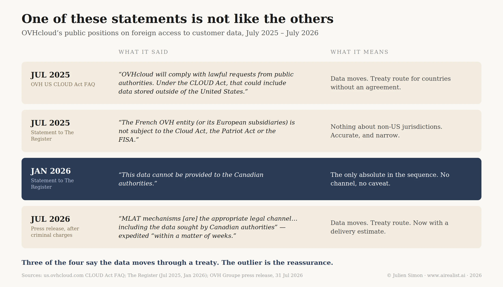

In January, OVHcloud said the customer records Canadian police had been demanding since 2024 “cannot be provided to the Canadian authorities,” and described the French company and its European subsidiaries as not subject to foreign extraterritorial law.[1]
On 31 July, facing criminal charges in Ontario, the company published a statement naming the treaty channel through which those same records could be obtained, “including the data sought by Canadian authorities.” French authorities, it added, had indicated such a request would be expedited and processed “within a matter of weeks.”[2]
Same records. Same case. Six months apart.
There is a scene inA Few Good Menwhere Tom Cruise, playing a Navy lawyer called Kaffee, asks Jack Nicholson’s Colonel Jessep for a transfer order. Jessep tells him the paperwork is his for the asking. He just has to ask nicely. Kaffee asks nicely, and Jessep hands it over, beaming. The document was never in doubt. The courtesy was, and the courtesy cost Jessep nothing, which is why he made a point of demanding it.
That is the argument OVH is running in Ontario. It is also, as it turns out, the argument France has been running since 1968.
The Charge
The charges are real and criminal. On 31 July, OVH Groupe SA and its Montreal subsidiary Hébergement OVH Inc. confirmed that Canadian authorities had charged both with failing to comply with a production order and with obstruction of justice.[3] A French company listed on Euronext Paris is being prosecuted in Ontario for declining to hand over records held in Europe. Octave Klaba said the company would defend the principle of corporate separateness with full confidence.[4]
Readers who followed this in April know what it looks like. In April 2024, the Royal Canadian Mounted Police obtained a production order for subscriber and account data linked to four IP addresses hosted on OVH servers in France, the United Kingdom, and Australia, as part of a sealed national security investigation. In September 2025, Justice Heather Perkins-McVey held that OVH’s commercial and virtual presence in Canada brought the French parent within Canadian jurisdiction, that mutual legal assistance was permissive rather than mandatory, and that the French blocking statute was, in practical effect, an empty vessel. OVH filed for judicial review. I covered that ruling, and what it revealed about the European Commission’s cloud scoring rubric, in “Ten Percent Sovereign.”[5]
That piece asked why Brussels assigned legal sovereignty 10% of its scoring matrix. This one asks a narrower question, and the answer is less comfortable: what is the thing being weighed?
Because in Ontario, OVH is not arguing that Canada cannot have the data. The argument is that Canada asked the wrong way.
The Test the Senate Set
Fourteen months before the charges, a French senator wrote the only sovereignty test in this story that survives contact with the law. 10 June 2025, Microsoft France’s Anton Carniaux under oath before a Senate commission of inquiry. Senator Dany Wattebled asks whether he can guarantee that French citizens’ data will never be handed over without the explicit agreement of the French authorities. “Non, je ne peux pas le garantir.”[6] Wattebled did not ask where the data was stored. He asked who has to agree before it moves. Hold on to that question.
OVHcloud made the most of that hearing. In August, chief legal officer Solange Viegas Dos Reis told The Register that Microsoft had finally told the truth, and that it was no surprise to her. Customers were shocked, she said, because they had spent years being reassured the American statute would not touch them. “It’s false! Because, indeed, the data can be communicated.”[7] Customers, she said, had started asking how it works with other providers.
That question got an answer eleven months later, in an Ontario courtroom, and The Register saw the joke coming in November: it would be deeply ironic, it noted, if OVH could not guarantee the same thing, because the company has a subsidiary in Canada.[8] The irony is where this starts, not where it finishes. What matters is not that OVH ended up in Microsoft’s position. It is that OVH’s own legal documents had been describing that position all along.
The CLOUD Act page published by OVH’s American entity states that the company will comply with lawful requests from public authorities, that these requests can reach data stored outside the United States, and that requests from countries without an executive agreement go through the treaty route.[9] The group’s data policy promises, when authorities come asking, to limit disclosure to what the authority requires. Limit, not refuse. The Canadian agreement spells out the drill: check that the requesting authority is competent and the request valid, turn away what is obviously neither, hand over the rest, and tell the customer.[10] It is Carniaux’s testimony, with a different flag.
Let’s be fair to OVH, because the company has been careful and largely consistent. Its July 2025 statement distinguished OVH US, which is subject to American process for its own customers, from the French entity and its European subsidiaries, which it said are not subject to the CLOUD Act, the Patriot Act, or FISA.[11] That is accurate as far as it goes, and the FAQ’s insistence on the treaty route is the same position the company is now arguing in Ontario. Only one public statement in the whole sequence ever promised more than the contracts do, and it is the January one, which said the data cannot be provided. The July 2026 release returned the contracts to the record and added a delivery estimate.

The promise that goes further belongs to the state. SecNumCloud, the French cloud doctrine that qualifies sensitive data, added legal requirements in version 3.2: European capital controls, European applicable law, and contractual immunity clauses. OVH holds it for Bare Metal Pod and said on the day it was awarded that the qualification protects against the legal risks of non-European regulation.[12]
Read the requirements narrowly, and they aim at third-country law, which is a fair reading and probably ANSSI’s. But nobody buying on that basis was distinguishing an American injunction from a European one. They heard that their data could not be taken without French agreement. Wattebled asked his question about an American injunction;the interesting version now is the one he had no reason to ask. Can a qualified French provider guarantee that customer data will never be transmitted to any foreign authority without the explicit agreement of the French authorities?
Until August 18, more or less. After that, for the most commonly demanded category of data, no. And the reason has nothing to do with American law.
What the Guarantee Says
Start with what the explicit agreement of the French authorities consists of, because the French state has described it, on the record, in this case.
In December 2025, Deputy Bastien Lachaud put a written question to the economy ministry: what would the government do to stop a foreign authority seizing data hosted on French soil? The reply was published in the Journal Officiel on 3 March 2026.[13]
The government declined to comment on foreign proceedings, then explained the law it relies on. Established in 1968, the blocking statute has two limbs. The first forbids handing a foreign authority anything touching French security, sovereignty, public order, or essential economic interests. The second, added in 1980, is the one at issue here, and it does something else. It exists to make sure that requests for evidence “empruntent bien les canaux et traités applicables,” that they take the applicable channels and treaties. Which channel, the ministry adds, means the 2001 Budapest Convention on cybercrime.
That second limb does not forbid disclosure. It governs which door the request comes through, and Paris says so in its own words, in the Journal Officiel, about this case.
The enforcement apparatus matches the ambition. A desk at Bercy, the SISSE, issues opinions on whether the 1968 law applies to a particular demand. The opinion is addressed to the French company that asked, which is expected to forward it to the foreign authority so that the authority can learn the formal French position. If that proves insufficient, the desk can ask a liaison magistrate to raise awareness of the law abroad or open a diplomatic channel. The ministry notes that the desk is working to become better known. That is the protection. Advisory opinions, forwarded onward, backed by a liaison magistrate and a phone call.
An Ontario court weighed it all and did not detain long. One conviction has ever been reported under that second limb, in the forty-six years since it was enacted. Expert witnesses could point to no case anywhere in which a foreign court had respected the statute. Perkins-McVey borrowed the English High Court’s verdict on it: an empty vessel.[14] An Ontario court had already brushed past French blocking provisions in a civil case twenty-five years earlier.[15]
So the French and Canadian positions sit closer together than the diplomatic temperature suggests. France says the data is available through the treaty. Canada says the treaty is optional.Nobody in the case says the data is unreachable, and the company holding it has now confirmed in writing that it is not.
The Third Door
Both sides of this dispute point at the same door. OVH calls it mutual legal assistance; the French government, answering Lachaud, names the treaty behind the phrase, the Budapest Convention on cybercrime. It dates from 2001, runs state to state through central authorities, and every party to this case concedes it is slow. In 2022, the Council of Europe adopted a protocol that allows authorities in one country to directly request subscriber information from a provider in another country, which is the category the RCMP requested.[16]
France signed it, and three weeks later, Brussels told member states to ratify. Canada signed it in June. Neither has been ratified, and 52 signatures have produced 4 ratifications, 1 short of the 5 required to bring it into force.[17] Both governments agreed that the door should exist. Neither built it. One of them then walked through the wall and is now prosecuting the company that was standing in front of it.
OVH is not the first provider to stake everything on the treaty route. Microsoft made the same argument for emails stored on a Dublin server and won it at the Second Circuit in 2016. Twenty months later, Congress legislated the win away with the CLOUD Act; the full story is in “Two Sovereign Clouds.”[18] European sovereignty marketing was built on the wreckage of that case, and it was built against a single statute. Every “not subject to the CLOUD Act” claim answers the American door. Canada has now opened a second door through its courts. The European Union spent five years building a third, and that one opens on August 18. It opens on OVH, too.
On August 18, 2026, the European Union’s e-Evidence Regulation becomes applicable. It creates the European Production Order:an authority in one member state can compel a provider established in another to hand over electronic evidence directly, with no state-to-state procedure in between. The Commission’s own summary gives the aim as speeding up access “regardless of where the data is located,” and lists subscriber data and the IP addresses needed to identify a user among the categories covered.[19]
Ten days to comply. Eight hours in an emergency. Penalties of up to two percent of worldwide annual turnover for providers that do not.[20]
Now, the detail that decides the argument. Ask for the contents of messages, and a judge has to sign; the country where the provider sits is told, and it has ten days to object, or ninety-six hours if the case is urgent.Ask for subscriber records, or for the address that identifies whoever was behind an account, and neither applies. No judge required. Nobody told.[21] The notification shrinks further from there, disappearing even for message content when the offense and the suspect both sit in the requesting country, which describes most investigations.[22] Subscriber records also sit at the bottom of the instrument’s threshold: an order may issue for any criminal offense, where traffic and content require offenses carrying at least three years.[22]
Put the pieces together and imagine the file. A prosecutor in Dublin opens an investigation into a customer of a French host. After August 18, she can send a certificate to that host’s designated establishment, requiring the subscriber records within ten days for any criminal offense, without any judge required by the Regulation, and without anyone in Paris being told it happened. The SISSE desk cannot issue an opinion on a demand it is unaware of. The liaison magistrate has nobody to call.
Dublin is the deliberate choice. The argument does not need a member state with a rule-of-law problem, and reaching for one would let the reader file this under judicial standards rather than sovereignty. Ireland is the jurisdiction European data policy treats as the safe pair of hands, and the guarantee fails against Ireland just as it does against anyone else, because notification does not take reputation into account. It simply is not there.
That certificate is Wattebled’s question served under a different flag, and from August 18, no French provider can answer it any better than Carniaux did. No, I cannot guarantee it. The reason is a European regulation, not an American one.
And Then Where?
The Regulation governs how a member state gets the data and says nothing about what it may do with it afterward. Onward transfer to a third country falls under the general law enforcement data regime, which permits it on the basis of adequacy, safeguards, or a list of derogations. The European Union and the United States have had a law enforcement transfer agreement since 2016.[23] Whether the records are then transferred from the police file to an intelligence file is not a European question at all. National security is reserved for the member states by the founding treaties, and several of them have run multilateral signals intelligence arrangements with Washington for decades. So the records can be compelled by Dublin without Paris knowing, and travel onward under a framework in which Paris has no standing, because Paris was never told there was a file.
What Was Sold
Compare all that with what France told its own parliament it was defending. Transfers to a third state, the question ran, can go through a derogation procedure supervised by French authorities, and Canada’s refusal to seek prior French control ran against the principles of digital sovereignty.[24] Whatever one thinks of Ottawa, the RCMP had to litigate for two years and lay criminal charges to reach a place an Irish prosecutor will reach in ten days with a form.
The objection to all this is good and deserves to be stated in full. A European Production Order is not a Canadian one wearing a European flag. It runs between states bound by a common rights floor, carries refusal grounds and remedies, obliges the issuing authority to notify the person whose data was taken, and allows the provider to pull the enforcing state back in. A Canadian order carries none of that. Anyone who tells you the two are equivalent is selling something. And none of it has happened yet: no European Production Order has ever been issued, and how prosecutors use the instrument is a fact about the future.
But equivalence was never the claim. What was sold to European cloud buyers was reach, not safeguards. Data resident in France is beyond the reach of authorities outside France, as obtaining it requires the consent of French authorities. From August 18 onward, for the most commonly requested category of data, French consent is not part of the design. What survives is the claim that some requesting states are better than others, an argument about who belongs to which club. In the transatlantic context, that argument has already collapsed twice, under the names Safe Harbor and Privacy Shield.
The Channel Test
Everything above turns Wattebled’s question into something portable, and it replaces the question most buyers ask.
Data residency is the wrong question. It tells you where the disk is. It tells you nothing about who can compel the disk. Three questions do the work instead.
Who has to sign?Name the authority, not the country. “Hosted in France” is not an answer. “A French investigating magistrate, acting on a letter rogatory transmitted through the central authority, after a SISSE opinion on whether the 1968 law even applies,” is an answer. Say it out loud and count the links. Every one of them is a place where a foreign state can be told no, and every one of them is a place where a foreign state can be told yes.
How long does that take?Not the statutory deadline. The observed time. If the provider has published a figure, use theirs. OVH published its own, and it’s weeks.
Has that authority ever said no?This is the question that separates a wall from a queue, and it is the one nobody asks, because it is answered by enforcement history rather than by statutory text. France publishes no refusal statistics for assistance requests, and none surfaced in this case. That does not prove Paris has never refused. It proves you cannot find out, which, for a buyer, is the operative fact. What the record shows is what happens to those who rely on the wall: one conviction under the blocking statute since 1980, and no foreign court has ever recognized it.
Run the test against any sovereign offering, European or otherwise. If the third question has no documented refusal, the product is sold with a delay and a review step. Delay has value. Investigations that are delayed all the time, and a review step counts for something. It just isn’t the thing the marketing describes.
Does anything pass? For subscriber data after the 18th, nothing European does, and that is the useful finding. Residual exposure to a direct foreign order becomes roughly uniform across every provider with an establishment in the Union, qualified or not. The sovereignty premium still buys real things: a European supply chain, an operator outside American discovery, a stack you can audit, a government that answers to your parliament. What it no longer buys, for the most commonly demanded category of data, is the thing on the label. Price it accordingly.
What Would Break This
The whole argument turns on one thing, and it is checkable.
France has to refuse. If Canada files the request the way OVH says it should, and Paris declines it, or sits on it long enough that the investigation dies, then the French review step is a real gate, and I have this wrong. The guarantee would be a wall after all, and a slow one, which is what a wall is.
Two lesser tests. If the Ontario Superior Court quashes the production order on territorial grounds instead of procedural ones, the Canadian doctrine narrows and stops traveling; as of publication, no ruling on the judicial review has been reported.[25] And if any member state publicly refuses to execute a European Production Order on sovereignty grounds after 18 August, the intra-EU channel will have its own gate.
In the meantime, there is work to do that costs nothing. Stop asking vendors where the data lives, which every vendor can answer, and ask the three questions, which most cannot. Get the answers in writing, dated, and in the contract file. Then run the same three against the SecNumCloud qualifications, the Cloud de Confiance arrangements, and the SEAL tiers in the Commission’s framework. None of them scored on the third question, because none of them asked it.
Three more for the provider itself. Which legal entity, in which member state, is its designated establishment for European Production Orders, because that choice decides whose prosecutors reach you fastest? Where is its law enforcement transparency report, broken down by requesting jurisdiction and outcome, because that document is the only place question three can ever be answered. And what survives once the data has left its hands? There's no good answer, because nothing does. Watch how long it takes for the transparency report to be released.
Jessep could have refused Kaffee outright. He never meant to. He wanted the courtesy first because it was free, and because demanding it let him keep the form of authority while handing over the substance. That was the arrangement Roubaix and Bercy were selling, and buyers paid a premium for it in good faith.
From August 18, nobody has to ask, nicely or not. European data sovereignty was never a wall. It was a rule of manners, and manners are optional now.
Notes
[1] OVHcloud statement to The Register, added to its report on 26 January 2026: “OVHcloud’s number one concern and priority is to protect its customers’ data. This is why this data cannot be provided to the Canadian authorities.” The same statement describes the group as “a multi-local player that is not subject to extraterritorial laws.” SeeThe Register’s report of 27 November 2025, to which the statement was added in an update dated 26 January 2026; the quoted wording now appears in the body of that continuously updated report. The statement was given to that publication and is not corroborated by an OVH-published document.
[2] OVH Groupe SA, “OVHcloud Confirms Intent to Vigorously Contest Charges Related to Canadian Production Order,” 31 July 2026. Direct quotation.
[3] Same release. Charges are for failure to comply with a production order under section 487.0198 of the Criminal Code of Canada and obstruction of justice under section 139(2); the underlying production order was issued on 19 April 2024 under section 487.014. Section 487.0198 creates a summary conviction offence for contravening an order made under sections 487.013 to 487.018; section 139(2) is the general obstruction offence and is indictable.
[4] Same release, quoting Octave Klaba, founder, chairman and chief executive officer. Klaba resumed the CEO role on 20 October 2025, when the board reunited the chairman and CEO functions, ending Benjamin Revcolevschi’s one-year tenure (OVHcloud corporate release, 21 October 2025).
[5]R. v. OVH Group SA and Hébergement OVH Inc., Ontario Court of Justice (Ottawa), Court File 24-000659, Perkins-McVey J., decision released 25 September 2025.Signed decisionvia David Fraser, McInnes Cooper. Julien Simon, “Ten Percent Sovereign,” The AI Realist, 22 April 2026, which covers the ruling, the virtual presence line of authority across four provinces, and the European Commission’s Cloud Sovereignty Framework in full.
[6] Sénat, commission d’enquête sur la commande publique,compte rendu of the hearing of 10 June 2025. Verbatim. Full analysis of the hearing, the statutory chain and the attribution of the question (Wattebled, per the official transcript, though some press reports credited commission president Simon Uzenat) in Julien Simon, “Two Sovereign Clouds, One Legal Wall,” The AI Realist, 26 February 2026. Carniaux has since left Microsoft France.
[7] Solange Viegas Dos Reis, chief legal officer, OVHcloud, interviewed in “Microsoft can’t guarantee data sovereignty – OVHcloud says ‘We told you so’,” The Register, 27 August 2025. Direct quotations.
[8]The Register, 27 November 2025, per note 1.
[9] OVH US, “Cloud Act – Clarifying Lawful Overseas Use of Data,” accessed August 2026. This page belongs to the group’s American entity, which is subject to American process; it is cited here for what the group publishes about its own compliance posture, not as a statement about the French entity. The page was quoted against OVH by AWS in July 2025, a conflation of entities this piece does not repeat. I quoted the same FAQ language in “The Sovereignty Mirage“ in December 2025, eight months before the charges.
[10] OVHcloud, “Personal data usage policy,” accessed August 2026, on requests from judicial, administrative or other authorities. Procedure at clause 4.2 of thePersonal Information Protection Agreementapplicable to Canadian clients, version dated 6 September 2023. Clause 4.3 addresses requests originating from an authority outside Canadian jurisdiction concerning a Canadian client.
[11] OVH statement toThe Register, July 2025: “OVH Group abides by local laws in the countries it operates in. As such, OVH US may be subject to requests from American authorities within the framework of the Cloud Act as long as these demands are connected to customers of OVH US and are strictly compliant with applicable American law. The French OVH entity (or its European subsidiaries) is not subject to the Cloud Act, the Patriot Act or the FISA.”
[12] ANSSI, SecNumCloud requirements repository version 3.2 (March 2022), which added criteria protecting against non-European law: capital control by European entities, exclusive application of European law, and contractual immunity provisions. The qualification comprises more than 360 technical, organisational and legal requirements. ANSSI’s qualification decision for OVHcloud’s Bare Metal Pod was published on 24 March 2025; OVHcloud announced it on31 March 2025, stating that the qualification “acts as another form of protection against the legal risks linked to non-European regulations.” Note that these are structural and contractual requirements rather than a bar on lawful compulsion, a distinction this piece turns on. On what the Commission’s SEAL ladder does and does not score, see “Ten Percent Sovereign“; on the architectural cost of the qualification, “More Sovereign, Different Stack: The Builder Tax.”
[13] Assemblée nationale,question écrite n° 11534, M. Bastien Lachaud, published in the Journal Officiel of 9 December 2025, p. 9993; answer from the ministry for artificial intelligence and digital affairs published in the Journal Officiel of 3 March 2026, p. 1907. All quotations in this section are from the answer. Loi n° 68-678 of 26 July 1968; Article 1 bis added by Loi n° 80-538 of 16 July 1980; Décret n° 2022-207 of 18 February 2022 establishing the SISSE opinion procedure. Penalties per the answer: six months’ imprisonment and a fine of €18,000, and for legal persons a fine of €90,000.
[14]Rulingat paragraphs 79 to 123, adopted at paragraph 115. “Empty vessel” from Butcher J inTugushev v. Orlov, [2021] EWHC 1514 (Comm), handed down 28 May 2021, at paragraph 33, applied to Loi 68-678 by Cockerill J inJoshua & Ors v. Renault SA & Ors, [2024] EWHC 1424 (KB), 11 June 2024, at paragraphs 77 to 78. The test as stated there is whether the foreign criminal law relied on is “not merely a text, or an empty vessel, but is regularly enforced.” The single reported Article 1 bis conviction is the “Christopher X” case, Cour de cassation, chambre criminelle, 12 December 2007, pourvoi n° 07-83.228, discussed at paragraph 85.
[15]Wilson v. Servier Canada Inc., 2000 CanLII 22407 (ON SC), 50 O.R. (3d) 219 (Cumming J.), cited at ruling paragraph 95. A civil class action involving a French parent, not a criminal production order, and turning on Article 15 of the French Civil Code rather than Loi 68-678. Cited here for the Canadian judicial posture the OVH ruling drew on, not as precedent on the blocking statute.
[16] Council of Europe,Second Additional Protocol to the Convention on Cybercrime on enhanced co-operation and disclosure of electronic evidence(CETS No. 224), adopted 17 November 2021, opened for signature 12 May 2022. Article 7 provides a legal basis for direct co-operation with service providers in another Party’s territory to obtain subscriber information, subject to reservations and declarations available to Parties.
[17] France signed on 27 January 2023, the thirty-second state to do so, alongside Germany: Council of Europe, “France and Germany become 32nd and 33rd states to sign the Second Additional Protocol,” 27 January 2023.Council Decision (EU) 2023/436of 14 February 2023 authorised Member States to ratify the Protocol in the interest of the European Union (OJ L 63, 28.2.2023, pp. 48-53); signature had been authorised by Council Decision (EU) 2022/722 of 5 April 2022. Canada signed on 20 June 2023, the thirty-eighth state, per theSecond Additional Protocol news archive; its justice department has consulted publicly on whether to ratify and on whether to reserve against Article 7, and no instrument of ratification has been deposited. Signature count as of the Council of Europe’s most recent published tally; ratifications: Serbia first,Japan second on 10 August 2023, the announcement of which confirms that five ratifications are required for entry into force, Hungary third on 5 February 2026, Costa Rica fourth on 15 April 2026. Entry into force falls on the first day of the month following three full months after the fifth ratification. Verified as of 15 April 2026.
[18]United States v. Microsoft Corp.The warrant was issued in 2013 for content stored in Microsoft’s Dublin facility; the Second Circuit held in 2016 that the Stored Communications Act did not reach it; the CLOUD Act was enacted in March 2018 and the Supreme Court dismissed the case as moot. The compelled disclosure provision is codified at 18 U.S.C. § 2713. The full trace of the statutory chain is in “Two Sovereign Clouds, One Legal Wall.” Other jurisdictions assert comparable reach; the count here is of the doors this case walks through.
[19] European Commission,summary of Regulation (EU) 2023/1543on European Production and Preservation Orders for electronic evidence in criminal proceedings. Full text atOJ L 191, 28.7.2023, pp. 118–180. Application from 18 August 2026. The Regulation binds all member states except Denmark, which is not bound by reason of its opt-out in the area of freedom, security and justice.
[20]Same summary. Ten days for transmission of requested data, eight hours in emergencies, ten days for the enforcing authority to raise a refusal ground where notification applies, reduced to ninety-six hours in emergency cases, and pecuniary penalties of up to two percent of a provider’s total worldwide annual turnover.
[21]Same summary: “If the electronic evidence includes content data or traffic data, except for data requested for the sole purpose of identifying the user, a court or judge must issue or review the order, and the judicial authority must notify the competent authority of the Member State in which the designated establishment is located, or the legal representative resides.” How the Regulation interacts with Loi 68-678 is untested; no French court has ruled on whether a European Production Order satisfies the applicable-channels requirement of Article 1 bis, though a directly applicable EU regulation is the stronger reading.
[22] Thresholds per eucrim, “E-evidence Regulation and Directive Published“: subscriber and identification data for all criminal offences and for execution of custodial sentences of at least four months; traffic and content for offences carrying a maximum of at least three years, or listed offences committed by means of an information system. On notification, Jessica Shurson, “The balance of efficiency and fundamental rights in the EU e-Evidence Regulation,”New Journal of European Criminal Law, 2025, on Article 8(2) and the consequence that in most domestic cases the enforcing state receives no notice. See also Athina Sachoulidou, “Cross-border access to electronic evidence in criminal matters,”New Journal of European Criminal Law, 2024, andeucrim, “Critical Issues in the New EU Regulation on Electronic Evidence in Criminal Proceedings”, on the exclusion of subscriber data from the notification requirement.
[23] Regulation (EU) 2023/1543 contains no onward-transfer provision of its own; it refers to Chapter V ofDirective (EU) 2016/680only in the context of conflicting third-country obligations (Article 17(7)). Transfers of law enforcement data to third countries are governed by Articles 35 to 38 of that Directive, permitting transfer on an adequacy decision, appropriate safeguards, or derogations for specific situations. The EU-US Umbrella Agreement of 2016 provides the standing framework for law enforcement transfers to the United States. Processing for national security purposes falls outside Union competence under Article 4(2) of the Treaty on European Union and outside the Directive’s scope; arrangements between national intelligence services are governed by national law and by bilateral or multilateral agreements that are not published. This paragraph describes the legal architecture, not any known transfer of the data at issue in this case.
[24] Assemblée nationale,question écrite n° 11534. The description of the derogation procedure and of the Canadian position appears in the question as put by the deputy; the ministry’s answer sets out the SISSE opinion procedure and reaffirms the government’s opposition to any circumvention of applicable co-operation channels and treaties.
[25] OVH filed for judicial review to the Ontario Superior Court of Justice through Miller Thomson at the end of October 2025, perheise online, 26 November 2025, which also reports from the court filings that the data has been preserved and that the French Ministry of Justice offered accelerated processing by letter rogatory. No decision on the judicial review had been reported at the time of writing.